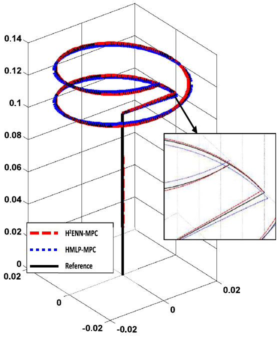
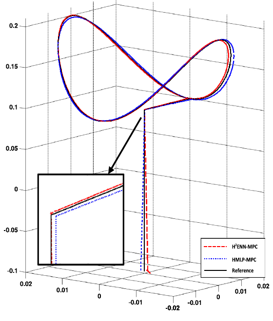

Research / Nonlinear Control & System Identification
H²ENN–MPC: Predictive Hierarchical Harmonic Emotional Neuro-Cognitive Control of Nonlinear Systems
Developing differentiable harmonic emotional neural networks for system identification and nonlinear model predictive control, with a 3-PSP parallel robot as the simulation case study.
The research problem
Nonlinear MPC needs a model that is accurate enough to predict system behavior and efficient enough to evaluate repeatedly during optimization. This research investigates emotional neural networks as computationally efficient nonlinear models.
Methods
ENN: Emotional Neural Network
A harmonic expansion link makes the emotional neural-network model smooth and differentiable, enabling its use for nonlinear system identification and gradient-based predictive control.

H²ENN–MPC: Hierarchical HENN-Based Model Predictive Control
A hierarchical arrangement of HENN models predicts system outputs across the control horizon. Sequential quadratic programming solves the nonlinear control optimization using these predictions.

3-PSP Parallel Robot
The 3-PSP parallel robot combines high precision, repeatability, and structural rigidity. Its coupled kinematics and nonlinear dynamics make accurate model derivation difficult, motivating a data-driven model for system identification and predictive control.

Research contributions
- Developed a harmonic emotional neural-network model for nonlinear system identification.
- Extended the model to a hierarchical predictor for nonlinear MPC.
- Analyzed learning convergence under the stated assumptions of the brain-emotional-learning formulation.
- Evaluated tracking accuracy, computation time, and robustness to noise, disturbances, and parameter uncertainty in a 3-PSP robot simulation.
Simulation results


This work improves tracking accuracy and reduces computation time by approximately twenty-fold on average compared with the hierarchical MLP-based MPC method in the reported simulation study.
Related publications
Predictive hierarchical harmonic emotional neuro-cognitive control of nonlinear systems
Hengameh Mirhajianmoghadam and Mohammad-R. Akbarzadeh-T.
Engineering Applications of Artificial Intelligence, volume 111, article 104781, 2022.
A Harmonic Emotional Neural Network for Non-Linear System Identification
Hengameh Mirhajianmoghadam, Mohammad-R. Akbarzadeh-T., and E. Lotfi.
24th Iranian Conference on Electrical Engineering (ICEE), 2016.